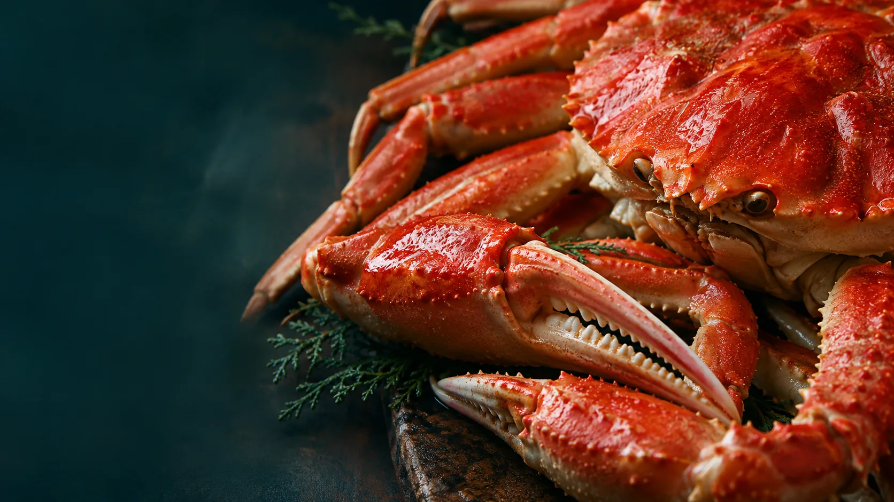
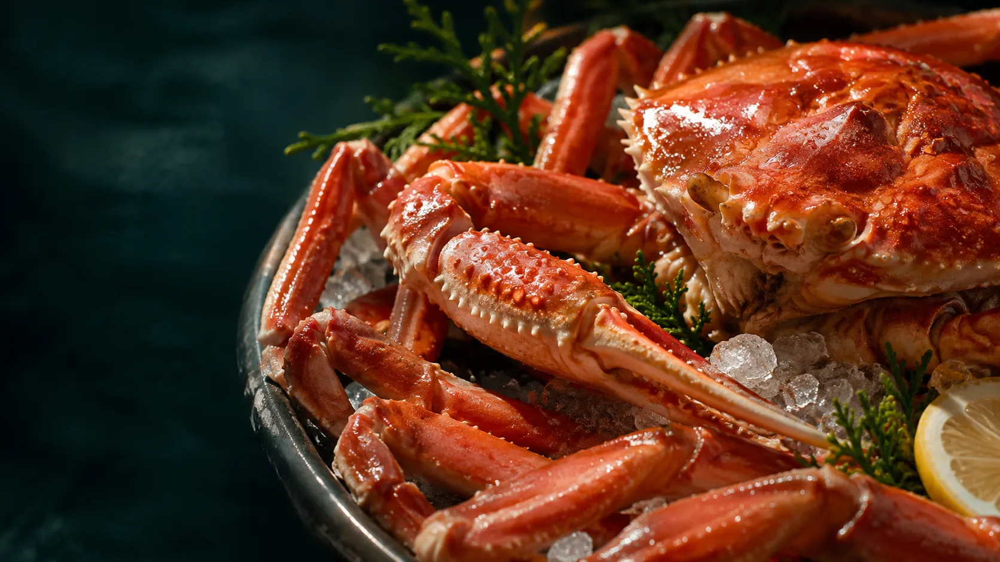

플레이스 정비
메뉴·사진·카테고리·노출 관련 작업 기록

발견에서 방문·주문까지. 쌓아온 기반 위에서 다음 90일의 우선순위를 함께 고릅니다.
* 음식 사진은 시각 콘셉트입니다. 금강산대게횟집 실물 사진이 아닙니다.
우리가 보여주고 싶은 내용과 손님이 확인하고 싶은 내용. 순서가 다르면 결과도 달라질 수 있습니다.
A GUEST'S FIRST THOUGHT
“이 집이 좋다는 건 알겠는데, 우리 인원에 맞는 메뉴와 가격은 어디서 확인하지?”
많은 정보를 올리는 것보다, 필요한 답을 먼저 보여주는 구조를 제안합니다.
기존 운영계획에 기록된 수행 항목을 기준으로 정리했습니다. 개별 완료·성과 수치는 보고 자료로 다시 확인하겠습니다.
메뉴·사진·카테고리·노출 관련 작업 기록
기획·편집·발행 이력. 향후 실제 반응과 연결
CPC 관리 기록. 클릭과 실제 행동을 구분
대게·회·물회, 여행객·포장 상황 중심 기획
‘무엇을 발행했는지’에 더해 ‘손님이 어디에서 망설였고, 다음 주에 무엇을 바꿨는지’를 보여드리겠습니다.
누가 방문하느냐에 따라, 음식 사진 다음에 보여줄 설명과 버튼도 달라져야 합니다.
먼저 먹고 싶은 메뉴가 보이고, 위치와 대기·운영 정보를 쉽게 찾게 합니다.
첫 사진·클립·메뉴의 시각적 정합성을 점검합니다.
다음은 실제 기존 화면의 전·후 비교가 아니라, 고객이 정보를 받아들이는 방식의 시연용 대비입니다.
사진은 있지만, 인원별 구성과 이용 방법을 다시 찾아야 합니다.
* 실제 적용 전 운영 메뉴, 가격, 재고, 포장·픽업 조건 등은 매장 확인이 필요합니다.
한 시즌에 모든 것을 해결하겠다고 약속하지 않겠습니다. 이번 90일의 첫 번째 문제를 하나 정합니다.
첫 사진·메뉴·위치 안내를 한 흐름으로 연결합니다.
길찾기·전화 행동과 매장 방문 확인 가능 데이터를 구분합니다.
기존 월 계약비 유지라는 방향 아래, 협의된 업무량 범위에서 채널별 자원을 재배치하는 안입니다. 이미 약속한 업무는 이행 여부와 변경 합의를 먼저 확인합니다.
양적 포스팅 일부를 선별 콘텐츠·메뉴·가격·이용 FAQ 정비로 전환 검토
선별 블로그 + 공식 정보같은 촬영 자산을 릴스·네이버 클립·플레이스 연동 가능성에 맞게 재편집
릴스 + 클립 + 장소 정보광고·콘텐츠에서 메뉴 확인, 전화, 길찾기, 포장 문의까지 이어지는 경로 점검
유입 → 선택 → 문의* 월별 발행량, 촬영일, 홈페이지 구축·수정·GEO 범위, 광고비·호스팅·포장 실물비는 계약서와 작업 범위를 대조해 확정합니다.
멋진 영상 한 편에서 끝나지 않도록, 메뉴·방문·주문 정보까지 이어지는 콘티입니다.

콘셉트 이미지 · 실제 영상 아님메뉴 확인 → 길찾기
0–2초 · 대게 클로즈업
2–6초 · 실제 메뉴 구성 확인
6–10초 · 위치와 방문 정보
노출 → 방문·포장 문의 → 주문 기록으로 이어지는 변화를 확인하겠습니다. 실제 매출과의 관계는 매장 데이터가 있어야 판단할 수 있습니다.
매출 증가 예측이 아닌 가상의 추가 매출 계산입니다. 실매출·객단가·영업일을 확인한 뒤 가정을 바꿔볼 수 있습니다.
예시값입니다. 주문 금액 0–1,000만 원, 주문 수 0–100건, 영업일 0–31일의 정수를 입력하세요.
80,000원 × 1건 × 26일
90일 단위 운영과 주간 공유를 제안합니다. 계약 기간·담당자·보고 주기는 기존 계약을 대조한 뒤 함께 확정합니다.
기존 계약·수행 기록, 메뉴, 채널 지표 대조
첫 사진·숏폼·메뉴·주문 안내의 우선순위 개선
클립·광고·전화·길찾기 흐름을 비교하고 수정
작업 이행, 반응, 실제 주문 지표의 확인 범위 검토
기존 계약 금액을 유지하는 방향으로, 이번 시즌 가장 중요한 문제에 집중하겠습니다. 제공 업무와 기존 약속은 함께 확인하고 정식 계약에서 확정합니다.
※ 시안의 이미지·메뉴·시나리오·추가 매출 계산은 실적이나 약속이 아닙니다. 계약비·기존 의무·월 제작량·별도 비용은 양측 확인 후 확정합니다. 선택은 이 탭에 임시 저장되며 외부로 전송되지 않습니다. 정식 계약 합의가 아닙니다.